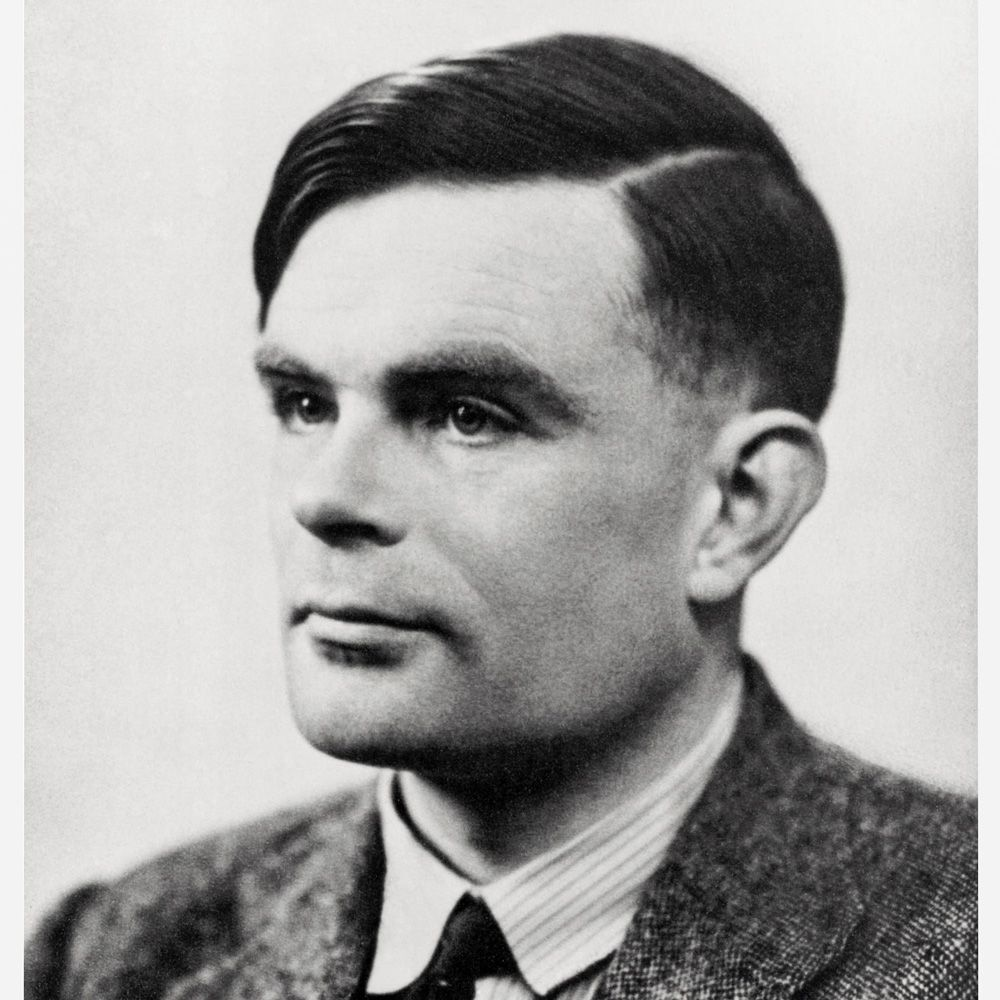
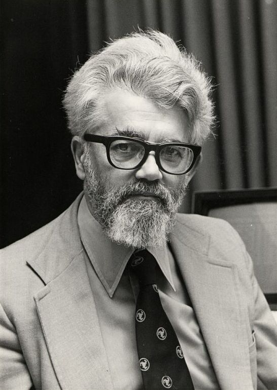

AI(人工知能)とは？
AI（人工知能）とは、人間の知能を模倣し、学習・推論・判断・認識などの能力をコンピュータ上で実現する技術のことを指します。 AIは、自動運転車、音声認識、画像認識、自然言語処理など、様々な分野で活用されています。例えば、Googleの音声アシスタントやAmazonの推奨システムはAIを活用した代表的な例です。これらのシステムは、ユーザーの行動や傾向を学習し、それに基づいた最適な結果を提供します。また、医療分野では、AIは画像診断に用いられ、病気の早期発見に貢献しています。 最近ではChatGPTやMidjourneyなどの「生成AI」が登場しました。これは文章やイラストなどのコンテンツを生成できるAIであり、大きな話題となりました。 これらの活用事例から、AIは我々の日常生活や社会全体に深く浸透していることがわかります。
AIの歴史年表
- 1950年-1960年
- 1950年
-
AI(人工知能)の概念が誕生
アラン・チューリングによるAI(人工知能)の概念創造
アラン・チューリング
- 1956年頃
-
「人工知能」という言葉が生まれる
ジョン・マッカーシーが思考する機械を「人工知能」と命名
「AI(人工知能)」の存在が世界中の科学者へ知られる
ジョン・マッカーシー
- 1960年-1974年
- 1960年代
-
第1次AIブーム勃興
第1次AIブームの中心は「推論」と「探索」
- 1966年
-
対話できる自然言語処理プログラム「イライザ」が誕生
Siriの起源となったAI・人工知能「イライザ(ELIZA)」が開発される
※イライザとは、文章を用いて自然言語（人間の言語）を処理して、あたかも人と対話しているように回答を提示できるプログラム。仕組みは、特定のキーワードに反応する回答パターンを複数用意しておき、入力した文章に含まれるキーワードに応じて、定型文で応答するというもの。
- 1974年-1980年
-
冬の時代
複雑な要因を含んだ問題はAIにとけないことが判明
AIの性能が科学者間で疑問視される
研究支援が滞りブームが下火化
- 1980年-1987年
-
多数のエキスパートシステムが実現
エキスパートシステムが事業に広く導入され始める
※エキスパートシステムとは、プログラムが特定の問題に対して専門家のように推論を展開し、問題解決へ導くシステムのこと。 エキスパートシステムの仕組み自体は現在でも様々な企業が使用されている。
- Amazonや楽天市場などECサイトにおける商品のレコメンド機能
- Googleユーザーの関心に合わせた記事を表示する機能
- SNSのチャットボット（自動的に会話できるプログラム）
- 1984年
-
注目を集めたプロジェクト・アルゴリズム
Cyc（サイク）プロジェクトが注目を集める
※Cyc（サイク）は、人工知能へのアプローチのひとつ。一般常識をデータベース化し（知識ベース）、人間と同等の推論システムを構築することを目的とするプロジェクトである。「Cyc」の名は「encyclopedia」に由来する。
- 1986年
-
誤差逆伝播法
ディープラーニングの基本となる「誤差逆伝播法」が発表
- 1987年-1993年
-
冬の時代（知識獲得のボトルネック）
エキスパートシステムの性能的な限界によりブームが下火となる
日本国内の国家プロジェクト「5Gプロジェクト」が終了する
- 1993年-2022年
-
第3次AIブーム（機械学習とディープラーニング）
機械学習を応用した技術の実用化が進む
ビッグデータによるデータ蓄積が加速化する
産業へのディープラーニングの導入が進む
- 1993年
-
3度目のAIブームの幕開け
- 1997年
-
AIがチェス王者に勝利する
技術革新➀機械学習の実用化
技術革新➁ビックデータ
技術革新➂ディープランニング